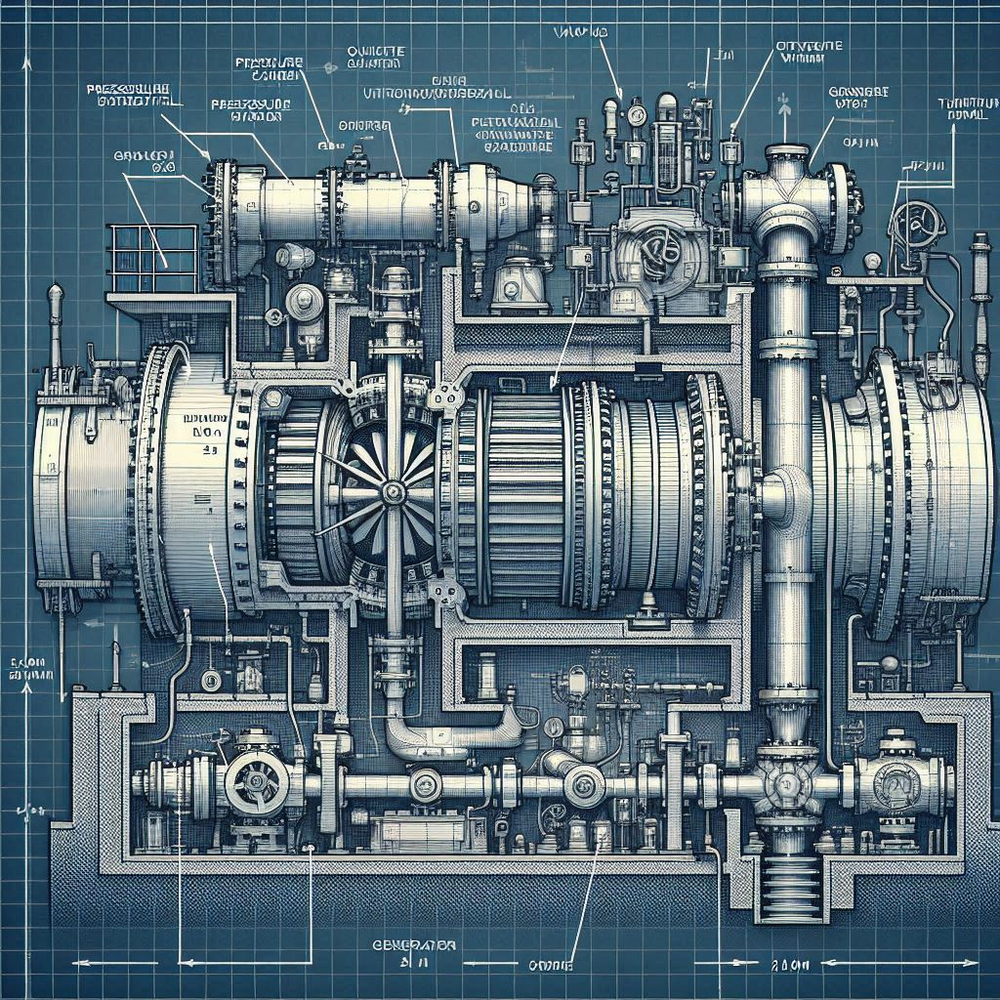

Fundamentos Teóricos y Principios Físicos
🗣️ En lenguaje sencillo
¿Cómo funciona? Imagina una pajita gigante: el agua del fondo (alta presión) sube porque "chupamos" en la parte de arriba (baja presión controlada). Ese flujo hace girar una rueda (turbina) que genera electricidad.
¿Es estable? Sí. El océano es prácticamente infinito: la presión no baja. Y la bomba de vacío ajusta en tiempo real para mantener el equilibrio.
❓ Preguntas frecuentes
¿Y si el agua deja de subir?
No puede "dejar" de subir mientras exista la diferencia de presión. Es como preguntar si el agua deja de caer en una cascada: la física es constante.
¿No se "gasta" la presión del mar?
No. El océano no es un depósito finito. La presión a 500m viene del peso de toda la columna de agua encima. Es como el aire: no se "agota" la presión atmosférica al respirar.
¿Qué pasa con la cavitación?
La cavitación ocurre cuando la presión baja demasiado y se forman burbujas que dañan la turbina. En nuestro diseño la presión mínima es 0.7 atm, muy por encima del límite de cavitación.
1. Presión Hidrostática
Definición: P = ρ × g × h
Donde:
- ρ = densidad agua marina = 1025 kg/m³
- g = gravedad = 9.81 m/s²
- h = profundidad = 500 m
Cálculo:
P = 1025 × 9.81 × 500 = 5,027,625 Pa = 49.6 atmEste es el gradiente que impulsa el flujo.
2. Ecuación de Bernoulli
P₁/ρ + v₁²/2 + gz₁ = P₂/ρ + v₂²/2 + gz₂ + f_pérdidasEn nuestro sistema:
- Punto 1 (entrada): P=50 atm, v≈0, z=500m
- Punto 2 (salida): P=0.7 atm, v=2.5 m/s, z=0m
- Diferencia presión: 49.3 atm impulsa flujo
3. Gradiente de Presión Vertical
dP/dz = -ρg = -10,045 Pa/metroEste gradiente es CONSTANTE en toda la tubería:
| Profundidad | Presión |
|---|---|
| 500 m | 50 atm |
| 400 m | 40 atm |
| 300 m | 30 atm |
| 200 m | 20 atm |
| 100 m | 10 atm |
| 0 m | 1 atm |
4. Diferencia de Presión Neta
ΔP_neta = P_entrada - P_salida - ΔP_fricción
ΔP_entrada = 50 atm (presión marina a 500m)
ΔP_salida = 0.7 atm (presión controlada en cámara)
ΔP_fricción = ~2 atm (pérdidas en tubería)
ΔP_neta = 50 - 0.7 - 2 = 47.3 atmEsta diferencia es lo que la turbina aprovecha.
5. Caudal y Velocidad
Ecuación de continuidad: Q = A × v
Q = (π × D² / 4) × v
Q = (π × 2² / 4) × 2.5 = 7.85 m³/s- D = 2 m (diámetro interior tubería)
- v = 2.5 m/s (velocidad controlada)
- Q = caudal continuo
6. Energía Disponible
Potencia teórica: P = Q × ρ × g × h_efectivo
P = 7.85 m³/s × 1025 kg/m³ × 9.81 m/s² × 47.3 m
P = 37.8 MW
h_efectivo = ΔP / (ρ × g) = 473 m / (1025 × 9.81) ≈ 47.3 m7. Eficiencia y Pérdidas
| Componente | Eficiencia |
|---|---|
| Turbina Pelton | 85% |
| Generador | 98% |
| Fricción tubería | ~2-3% |
| Cavitación riesgo | <1% |
Potencia neta generada: 37.8 MW × 0.85 × 0.98 = 31.5 MW
Menos costes operativos (bomba vacío ~2-3 MW): ≈ 28.5 MW
GENERACIÓN NETA: 26-28 MW8. Continuidad del Flujo
¿Por qué no se "equilibra" el sistema?
Porque hay un gradiente de presión VERTICAL persistente:
- El océano mantiene 50 atm en el fondo continuamente
- La cámara mantiene 0.7 atm por bomba vacío
- Diferencia persiste indefinidamente
- Flujo continúa mientras exista diferencia
Analogía: Como una presa que nunca se vacía porque el río no deja de fluir. El océano es "infinito", presión no baja.
9. Diferencia con Sistemas Pasivos
Sin succión (tubo abierto):
- Agua subiría a nivel del mar (500m)
- Se detendría
- No hay flujo
Con succión (nuestro sistema):
- Cámara a 0.7 atm crea "vacío"
- Diferencia 50 - 0.7 atm impulsa flujo
- Flujo continúa indefinidamente
Diferencia crítica: LA SUCCIÓN.

10. Validación con Precedentes
| Precedente | Descripción | Validación |
|---|---|---|
| Tuberías petróleo | Flujo desde 1000m profundidad, 50 años | ✅ Misma física |
| Sistemas desalinización | Captan agua profunda por presión marina | ✅ En desarrollo |
| Fuentes artesianas | Acuífero confinado, brota sin bombeo, 2000 años | ✅ Gradiente de presión |
CONCLUSIÓN: La física es sólida. Precedentes existen.